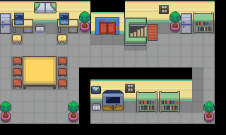

勾魂眼（全国图鉴 No.0302）
战斗形态槽：只在战斗中通过 Mega 进化 / 超极巨化出现，不是可永久获得的独立个体。

怎样获得
进化获得
- ← 勾魂眼 ｜ Mega 进化（附加 Mega 石）
- 战斗形态变化来源，不是永久获得一只独立个体。
野生遭遇
- 烧焦塔 ｜ 黄昏 17:00–18:59 ｜ 地面·草丛/洞窟 ｜ Lv.14–18 ｜ 选槽权重 5、5（合计 10） ｜ 遇敌率表值 7
- 地图条目：烧焦塔 48:4、烧焦塔 48:3
- 破海洞穴 ｜ 黄昏 17:00–18:59 ｜ 地面·草丛/洞窟 ｜ Lv.21–26 ｜ 选槽权重 20 ｜ 遇敌率表值 7
- 地图条目：破海洞穴 56:38
- 都城瀑布 ｜ 黄昏 17:00–18:59 ｜ 地面·草丛/洞窟 ｜ Lv.21–24 ｜ 选槽权重 5、5（合计 10） ｜ 遇敌率表值 7
- 地图条目：都城瀑布 55:0
- 47号道路 ｜ 夜晚 19:00–04:59 ｜ 地面·草丛/洞窟 ｜ Lv.21–26 ｜ 选槽权重 5、5（合计 10） ｜ 遇敌率表值 15
- 地图条目：47号道路 56:25
- 城都矿山 ｜ 夜晚 19:00–04:59 ｜ 地面·草丛/洞窟 ｜ Lv.22–24 ｜ 选槽权重 10 ｜ 遇敌率表值 15
- 地图条目：城都矿山 51:9
- 擂钵山 ｜ 夜晚 19:00–04:59 ｜ 地面·草丛/洞窟 ｜ Lv.28–32 ｜ 选槽权重 5、5（合计 10） ｜ 遇敌率表值 7
- 地图条目：擂钵山 1:111、擂钵山 55:10
- 擂钵山 ｜ 夜晚 19:00–04:59 ｜ 地面·草丛/洞窟 ｜ Lv.15–20 ｜ 选槽权重 5、5（合计 10） ｜ 遇敌率表值 7
- 地图条目：擂钵山 55:8、擂钵山 55:11、擂钵山 55:9
- 断崖通道 ｜ 夜晚 19:00–04:59 ｜ 地面·草丛/洞窟 ｜ Lv.21–27 ｜ 选槽权重 20、10（合计 30） ｜ 遇敌率表值 7
- 地图条目：断崖通道 1:99、断崖通道 1:107
- 烧焦塔 ｜ 夜晚 19:00–04:59 ｜ 地面·草丛/洞窟 ｜ Lv.14–18 ｜ 选槽权重 5 ｜ 遇敌率表值 7
- 地图条目：烧焦塔 48:3
- 破海洞穴 ｜ 夜晚 19:00–04:59 ｜ 地面·草丛/洞窟 ｜ Lv.21–26 ｜ 选槽权重 20 ｜ 遇敌率表值 7
- 地图条目：破海洞穴 56:38
- 缘朱市 ｜ 夜晚 19:00–04:59 ｜ 地面·草丛/洞窟 ｜ Lv.21–27 ｜ 选槽权重 20、10（合计 30） ｜ 遇敌率表值 7
- 地图条目：缘朱市 55:28、缘朱市 55:29、缘朱市 55:30
- 连接洞 ｜ 夜晚 19:00–04:59 ｜ 地面·草丛/洞窟 ｜ Lv.6–8 ｜ 选槽权重 5、5、4（合计 14） ｜ 遇敌率表值 7
- 地图条目：连接洞 3:86
- 连接洞 ｜ 夜晚 19:00–04:59 ｜ 地面·草丛/洞窟 ｜ Lv.5–9 ｜ 选槽权重 5、5、4（合计 14） ｜ 遇敌率表值 7
- 地图条目：连接洞 3:94
- 都城瀑布 ｜ 夜晚 19:00–04:59 ｜ 地面·草丛/洞窟 ｜ Lv.21–24 ｜ 选槽权重 5、5（合计 10） ｜ 遇敌率表值 7
- 地图条目：都城瀑布 55:0
广播遭遇
- 黑暗洞穴 ｜ 周三（需播放「丰缘之声」） ｜ 槽权重 20 ｜ 地图：黑暗洞穴
- 喇叭芽之塔 ｜ 周三（需播放「丰缘之声」） ｜ 槽权重 20 ｜ 地图：喇叭芽之塔
- 喇叭芽之塔 ｜ 周三（需播放「丰缘之声」） ｜ 槽权重 20 ｜ 地图：喇叭芽之塔
- 连接洞 ｜ 周三（需播放「丰缘之声」） ｜ 槽权重 20 ｜ 地图：连接洞
- 连接洞 ｜ 周三（需播放「丰缘之声」） ｜ 槽权重 20 ｜ 地图：连接洞
- 呆呆兽之井 ｜ 周三（需播放「丰缘之声」） ｜ 槽权重 20 ｜ 地图：呆呆兽之井
- 不知名遗迹 ｜ 周三（需播放「丰缘之声」） ｜ 槽权重 20、20 ｜ 地图：不知名遗迹
- 不知名遗迹 ｜ 周三（需播放「丰缘之声」） ｜ 槽权重 20、20 ｜ 地图：不知名遗迹
- 不知名遗迹 ｜ 周三（需播放「丰缘之声」） ｜ 槽权重 20、20 ｜ 地图：不知名遗迹
- 不知名遗迹 ｜ 周三（需播放「丰缘之声」） ｜ 槽权重 20、20 ｜ 地图：不知名遗迹
- 不知名遗迹 ｜ 周三（需播放「丰缘之声」） ｜ 槽权重 20、20 ｜ 地图：不知名遗迹
- 黑暗洞穴 ｜ 周三（需播放「丰缘之声」） ｜ 槽权重 20、20 ｜ 地图：黑暗洞穴
- 城都矿山 ｜ 周三（需播放「丰缘之声」） ｜ 槽权重 20、20 ｜ 地图：城都矿山
- 都城瀑布 ｜ 周三（需播放「丰缘之声」） ｜ 槽权重 20 ｜ 地图：都城瀑布
- 呆呆兽之井 ｜ 周三（需播放「丰缘之声」） ｜ 槽权重 20 ｜ 地图：呆呆兽之井
- 呆呆兽之井 ｜ 周三（需播放「丰缘之声」） ｜ 槽权重 20 ｜ 地图：呆呆兽之井
- 呆呆兽之井 ｜ 周三（需播放「丰缘之声」） ｜ 槽权重 20 ｜ 地图：呆呆兽之井
- 漩涡岛 ｜ 周三（需播放「丰缘之声」） ｜ 槽权重 20、20 ｜ 地图：漩涡岛
- 漩涡岛 ｜ 周三（需播放「丰缘之声」） ｜ 槽权重 20、20 ｜ 地图：漩涡岛
- 漩涡岛 ｜ 周三（需播放「丰缘之声」） ｜ 槽权重 20、20 ｜ 地图：漩涡岛
- 破海洞穴 ｜ 周三（需播放「丰缘之声」） ｜ 槽权重 20、20 ｜ 地图：破海洞穴
- 破海洞穴 ｜ 周三（需播放「丰缘之声」） ｜ 槽权重 20、20 ｜ 地图：破海洞穴
- 破海洞穴 ｜ 周三（需播放「丰缘之声」） ｜ 槽权重 20、20 ｜ 地图：破海洞穴
- 破海洞穴 ｜ 周三（需播放「丰缘之声」） ｜ 槽权重 20、20 ｜ 地图：破海洞穴
- 破海洞穴 ｜ 周三（需播放「丰缘之声」） ｜ 槽权重 20、20 ｜ 地图：破海洞穴
- 破海洞穴 ｜ 周三（需播放「丰缘之声」） ｜ 槽权重 40 ｜ 地图：破海洞穴
赠送
- 满金市 ｜ Lv.15
- 地图：满金市
剧情战斗候选
setwildbattle只说明脚本会发起这场战斗，不保证可捕获或可获得。
- 城都矿山 ｜ Lv.28
- 地图：城都矿山
进化
本槽的进化去向
- ⇄ 勾魂眼 ｜ Mega 进化（附加 Mega 石） ｜ 反向记录：本槽在形态变化结束后对应回通常形态，不是一次永久获得的进化。
进化前来源
- ← 勾魂眼 ｜ Mega 进化（附加 Mega 石）
数据来源
- 内部槽：0322
- 属性：恶 / 幽灵 ｜ 种族值合计 380
- 种族值：HP 50 ｜ 攻击 75 ｜ 防御 75 ｜ 特攻 65 ｜ 特防 65 ｜ 速度 50
- 捕获率字段：45（表值；实际捕获还受精灵球/状态/等级影响）
- 蛋群：人形 / 人形 ｜ 成长曲线：MEDIUM_SLOW
- 基础数据：
wiki_export/core/data/species.json - 全国图鉴映射：
wiki_export/core/data/national_dex.json - 进化数据：
wiki_export/core/data/evolutions.json - 获取数据：
wiki_export/world/data/acquisition_by_species.json（species_id 322） - 遭遇表：
wiki_export/world/data/encounters.json - 地图：
wiki_export/world/data/maps.json - 进化方式符号：
wiki_export/enrichment/reference_only/evolution_methods.json（参考表） - 道具/招式名称：
wiki_export/core/data/items.json、wiki_export/core/data/moves.json - 证据状态：仅有内部选槽权重；广播门控旗标语义未穷举
- 证据状态：脚本指令证据；未证明剧情可达性
- 证据状态：静态遭遇表证据；未证明实际可达性
相关支线
任务可能要求携带本条目，或将其作为奖励；具体用途见任务步骤。
地点地图
共享RGB底图；点击可缩放定位。数字对应本页相关地点，不代表地图上全部事件。
烧焦塔

地图范围记录：当前资料没有精确人物／遭遇坐标。 底图有4个图块缺少原始数据。
烧焦塔

地图范围记录：当前资料没有精确人物／遭遇坐标。 底图有7个图块缺少原始数据。
都城瀑布

地图范围记录：当前资料没有精确人物／遭遇坐标。
破海洞穴

地图范围记录：当前资料没有精确人物／遭遇坐标。
擂钵山

地图范围记录：当前资料没有精确人物／遭遇坐标。
47号道路

地图范围记录：当前资料没有精确人物／遭遇坐标。 底图有3个图块缺少原始数据。
展开其余 34 张地点地图
断崖通道

地图范围记录：当前资料没有精确人物／遭遇坐标。
断崖通道

地图范围记录：当前资料没有精确人物／遭遇坐标。
缘朱市

地图范围记录：当前资料没有精确人物／遭遇坐标。
缘朱市

地图范围记录：当前资料没有精确人物／遭遇坐标。
缘朱市

地图范围记录：当前资料没有精确人物／遭遇坐标。
连接洞

地图范围记录：当前资料没有精确人物／遭遇坐标。
连接洞

地图范围记录：当前资料没有精确人物／遭遇坐标。
擂钵山

地图范围记录：当前资料没有精确人物／遭遇坐标。
擂钵山

地图范围记录：当前资料没有精确人物／遭遇坐标。
擂钵山

地图范围记录：当前资料没有精确人物／遭遇坐标。
擂钵山

地图范围记录：当前资料没有精确人物／遭遇坐标。
城都矿山

1 勾魂眼（22,41）
黑暗洞穴

地图范围记录：当前资料没有精确人物／遭遇坐标。
喇叭芽之塔

地图范围记录：当前资料没有精确人物／遭遇坐标。
喇叭芽之塔

地图范围记录：当前资料没有精确人物／遭遇坐标。
呆呆兽之井

地图范围记录：当前资料没有精确人物／遭遇坐标。
不知名遗迹

地图范围记录：当前资料没有精确人物／遭遇坐标。
不知名遗迹

地图范围记录：当前资料没有精确人物／遭遇坐标。
不知名遗迹

地图范围记录：当前资料没有精确人物／遭遇坐标。
不知名遗迹

地图范围记录：当前资料没有精确人物／遭遇坐标。
不知名遗迹

地图范围记录：当前资料没有精确人物／遭遇坐标。
黑暗洞穴

地图范围记录：当前资料没有精确人物／遭遇坐标。
呆呆兽之井

地图范围记录：当前资料没有精确人物／遭遇坐标。
呆呆兽之井

地图范围记录：当前资料没有精确人物／遭遇坐标。
呆呆兽之井

地图范围记录：当前资料没有精确人物／遭遇坐标。
漩涡岛

地图范围记录：当前资料没有精确人物／遭遇坐标。
漩涡岛

地图范围记录：当前资料没有精确人物／遭遇坐标。
漩涡岛

地图范围记录：当前资料没有精确人物／遭遇坐标。
破海洞穴

地图范围记录：当前资料没有精确人物／遭遇坐标。
破海洞穴

地图范围记录：当前资料没有精确人物／遭遇坐标。
破海洞穴

地图范围记录：当前资料没有精确人物／遭遇坐标。
破海洞穴

地图范围记录：当前资料没有精确人物／遭遇坐标。
破海洞穴

地图范围记录：当前资料没有精确人物／遭遇坐标。
满金市

1 勾魂眼（1,6）